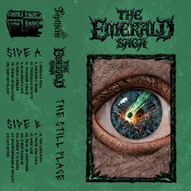

Треклист
- Emerald Fall
- Farewell, Home
- Threshold of Fate
- Thousand Lights
- Bloodshot
- Rural Leisure
- Dream of Salvation
- Sand and Blood
- The Long Road
- Those Who Take
- Dark Lair
- Price of Acceptance
- Event Horizon
- Where It Is Green
- Incomprehensible Reality
- Not An End
Кассета I
The Still Place
Выход • 24 Июля 2026
00
Дней
00
Часов
00
Мин.
00
Сек.
24 Июля, 2026 • 8:00 AM GMT+3
Спустя несколько лет после Изумрудного падения, стареющий человек оставляет всё позади, отправляясь на поиски Звезды, навсегда изменившей мир.